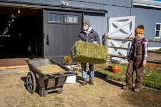
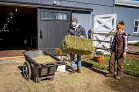

Welcome to Mohr Farms
Located in the scenic countryside of Iowa, Mohr Farms is a proud family-owned cattle operation founded by Larry Mohr. With decades of dedication to responsible livestock farming, Mohr Farms continues to grow through the hard work of Larry and his sons, Joe and Chris. Whether you're a local neighbor or a curious visitor, you're invited to learn more about our family, services, and sustainable farming values.
What Makes Us Different?
- Multi-generational knowledge and care
- Humane and sustainable cattle practices
- Locally raised, high-quality Angus beef

 
